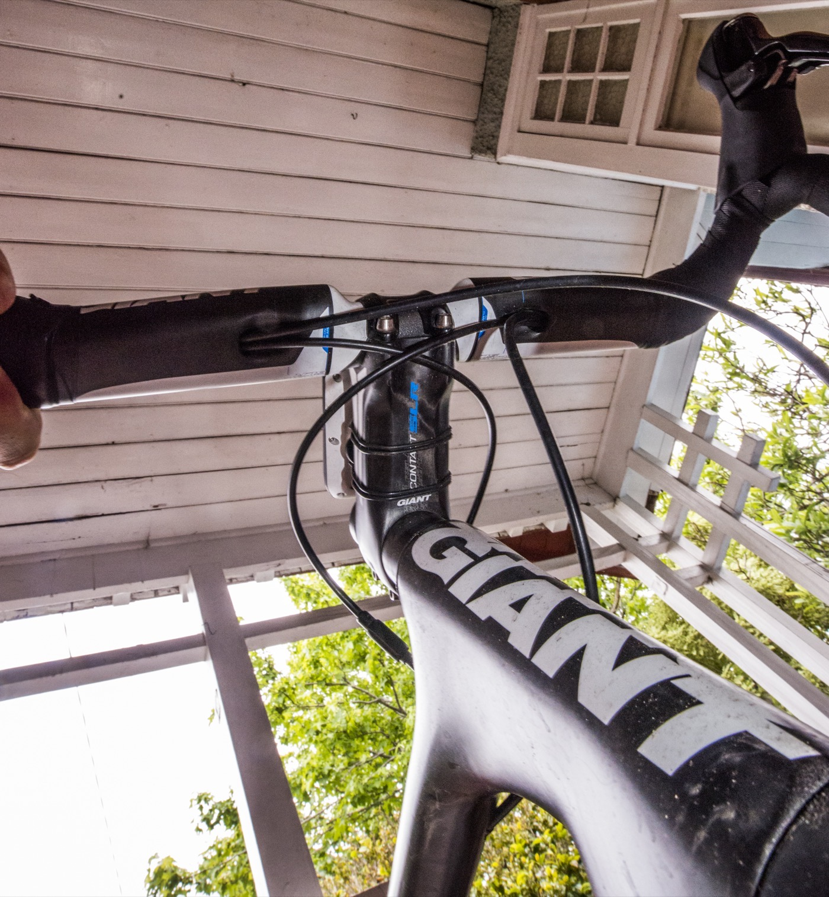
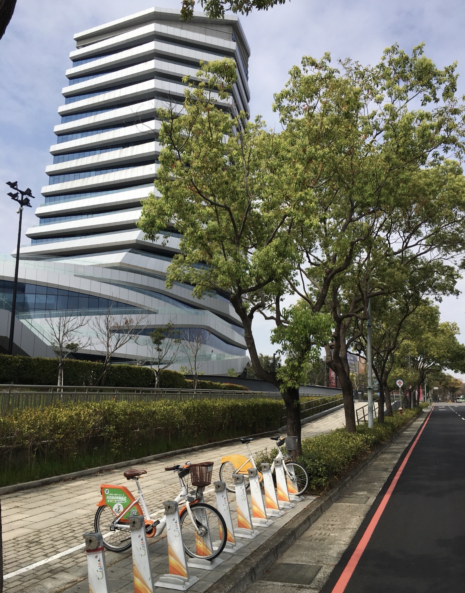
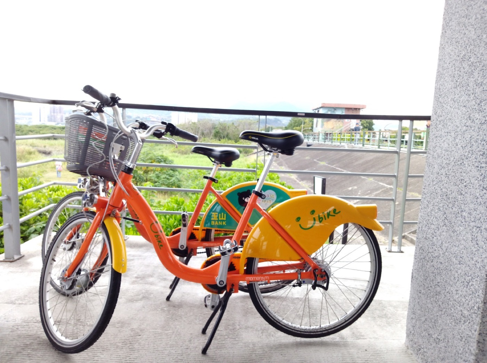
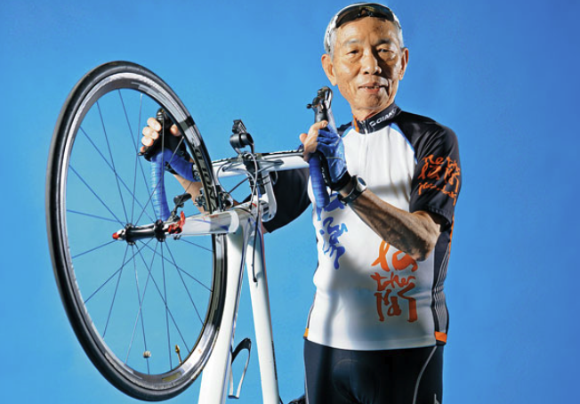

草創時期：從沙鹿到大甲的代工廠
1972 年，劉金標與 7 位夥伴——包括姊姊杜劉月嬌、外甥女杜綉珍等人——在台中縣大甲鎮（今台中市大甲區）共同創立「巨大機械股份有限公司」。創業初期，巨大只是一家默默無聞的自行車代工廠，直到 1977 年開始為美國自行車大廠 Schwinn 代工生產，才逐漸站穩腳步。1980 年，巨大成立日南廠，一躍成為台灣最大、亞洲第二大的自行車製造商。
然而純代工的隱憂在 1980 年代逐漸浮現：客戶隨時可能轉單，議價權始終不在自己手上。這段「幫別人做嫁衣」的經歷，也埋下了劉金標日後決心打造自有品牌的種子。
從代工到品牌：微笑曲線的實踐
1981 年，捷安特品牌正式誕生後，劉金標並未止步於「有品牌」，而是持續思考如何讓台灣自行車產業整體升級。2003 年，他號召包括競爭對手美利達（Merida）在內的上下游廠商，成立「A-Team」產業聯盟，目標不是壓低成本互相削價，而是共同提升研發、品管與交期，推動台灣從「量產代工」轉向「高值化研發製造」中心，避開與中國大陸的低價競爭。
這正是劉金標常談的「微笑曲線」邏輯——附加價值最低的組裝代工位於曲線谷底，兩端的研發設計與品牌行銷才是利潤所在。捷安特從谷底一路爬升，最終站上曲線頂端。

產品革新：TCR 改寫公路車設計語言
1997 年，捷安特與傳奇設計師 Mike Burrows 合作推出 TCR（Total Compact Road）車架，以較小的三角形車架搭配加長座管，顛覆傳統公路車幾何設計。這項「壓縮車架」（Compact Road）概念在當時相當激進，甚至一度遭國際自由車總會（UCI）質疑是否合乎規範，最終捷安特成功說服 UCI，證明此設計能同時兼顧輕量化與操控性。TCR 後來成為業界主流設計語言，也奠定捷安特在公路車領域的技術話語權。

發展時間軸
邁向全球：從台灣品牌到國際企業
憑藉扎實的製造品質與研發實力，捷安特逐步擺脫「台灣代工」的形象，晉升為國際自行車產業的領導品牌，並成為全球營業額最高的自行車製造商之一。2012 年集團自行車銷售量達 630 萬輛，年營收突破 18 億美元。捷安特也積極投入國際職業自行車賽事，先後贊助 Giant-Alpecin、Team Sunweb 等世界頂級車隊，透過賽場上的能見度進一步鞏固品牌的專業形象。

製造實力
從代工起家，累積數十年的自行車製造與研發經驗，成為全球產業鏈中不可或缺的一環。
品牌全球化
陸續在荷蘭、美國、日本、中國大陸等地設立分公司與生產基地，建立橫跨全球的產銷網絡。
品牌矩陣：不只有 Giant
今日的巨大集團旗下不只有 Giant 一個品牌，而是形成完整的產品矩陣，分別鎖定不同的騎乘族群與市場定位。
Liv
全球首個純女性自行車品牌，由全女性團隊主導設計、行銷，打造專屬女性車架幾何的公路、越野與砂石車款。
momentum
主打城市通勤與休閒騎乘，強調舒適性與日常實用性，鎖定都會代步族群。
CADEX
高階自行車零組件品牌，專攻碳纖維輪組與零件研發，服務職業與競賽級車手。
推動台灣單車文化：YouBike
捷安特的影響力不僅止於出口貿易。1989 年，劉金標捐助成立台灣首個推廣自行車休閒運動的非營利組織，2000 年更名為「自行車新文化基金會」，長期舉辦環島認證、騎乘挑戰等活動，扎根台灣的單車文化。2007 年，時年 73 歲的劉金標親自以 15 天騎完 973 公里完成單車環島，一夕之間帶動全台「單車環島」熱潮，也成為他晚年最廣為人知的形象。
2012 年，在他的積極推動下，YouBike 微笑單車正式於台北市全面啟用，讓自行車重新融入台灣人的日常生活與城市交通，也讓捷安特這個品牌與台灣的單車文化緊密相連。

「騎自行車，不只是運動，更是一種生活態度。」
創辦人辭世與企業傳承

創辦人劉金標一生以自行車為志業，晚年仍身體力行長途環島與環球騎行，是台灣自行車產業的精神象徵。他於 2026 年 2 月 16 日辭世，享耆壽 93 歲，其開創精神與「巨大集團」至今仍持續影響全球自行車產業，也持續透過自行車新文化基金會延續推廣單車生活的使命。
小結
從大甲小鎮的代工廠，到荷蘭設立歐洲總部；從一次押上身家的品牌賭注，到號召同業共組 A-Team 推動全產業升級；從 TCR 改寫公路車設計語言，到晚年推動 YouBike 改變台灣城市交通——捷安特的歷史，某種程度上也是台灣製造業從代工走向自有品牌、從價格競爭走向價值創造、從島內走向世界的縮影。